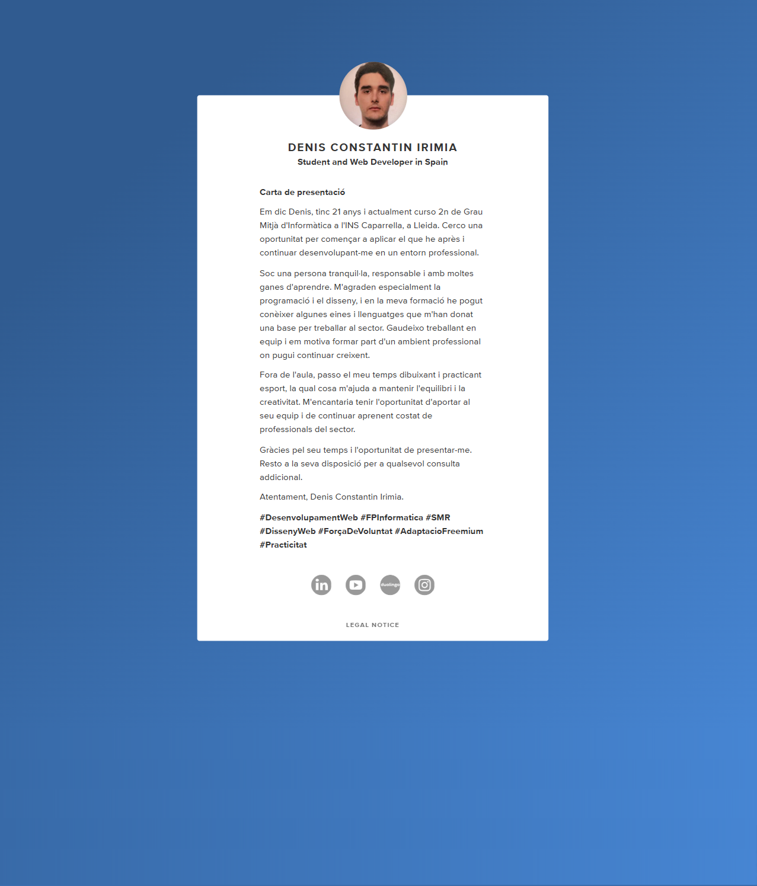

Salta al contingut principal
Denis Constantin Irimia
Portafolis de matèria
Inici
Empresa
Pla d'empresa
Accessibilitat
Contacte
Zinkers FP
Som sostenibles
Som transparència
Benvinguts /des al meu portafolis de materia
About Me
